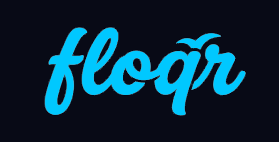
Exact recolors of your teal script wordmark (bird above the q), plus AI directional treatments. Letterforms below prefer the exact PNG recolors so the shape stays true to your source.
Sampled ink ≈ #2D8A99. Transparent master used for all exact recolors.
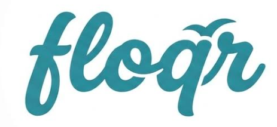
One wordmark color per chrome. Bird-only for favicons / app icons; full script for Search / login hero.
| Chrome | Wordmark | Notes |
|---|---|---|
| Nightlife | #00C8FF | Matches tile cyan; white alt for max contrast |
| Traditional | #E8ECF0 | Silver on charcoal; ink alt for light cards |
| Black Tiffany | #81D8D0 | Classic Tiffany; deep #0ABAB5 alt |
| White / Black | #111114 | Black ink on light chrome |
| Black Dark Green | #2D8A5A | Forest #226E44 alt |

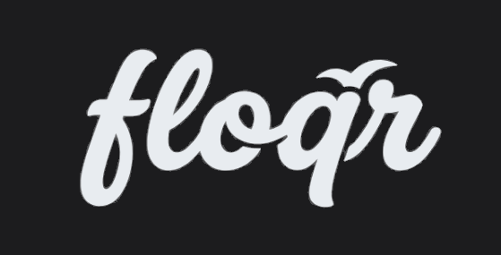
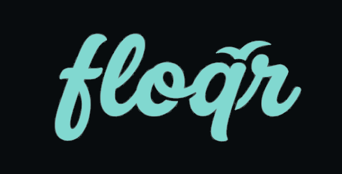
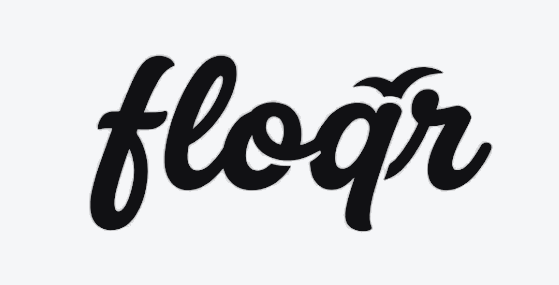
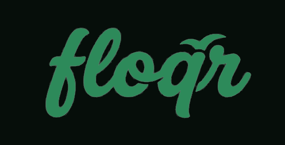
Same motif, redrawn. Use for mood only — letterforms differ slightly from your source. Prefer exact recolors for production until we vectorize the original.
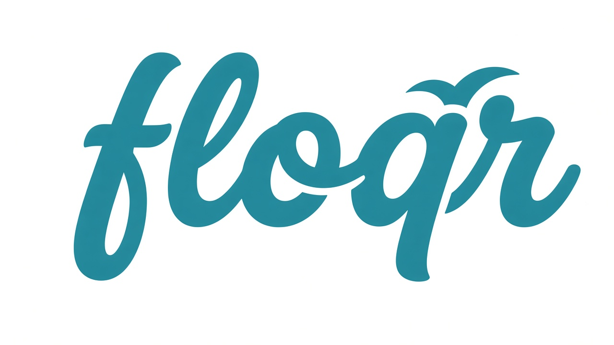
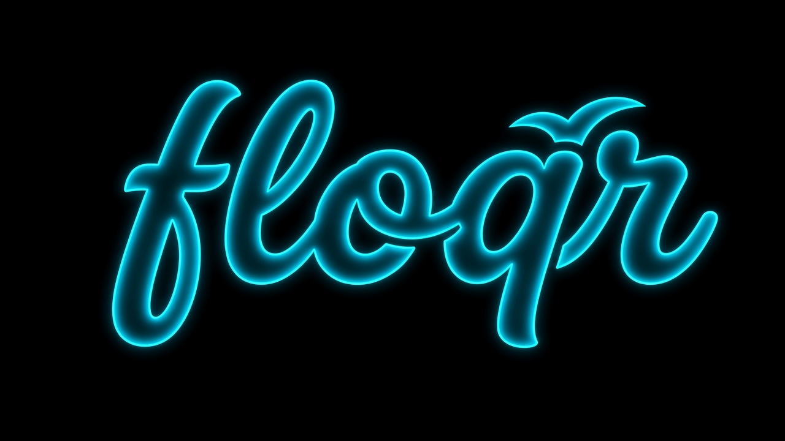
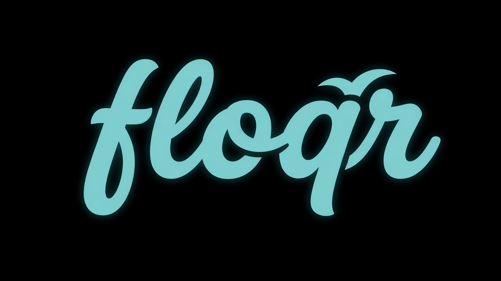
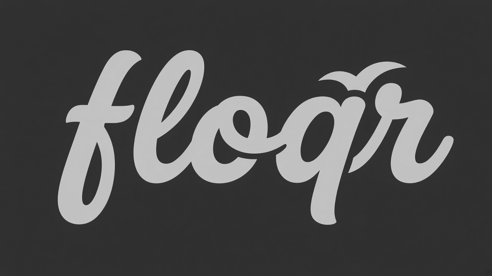
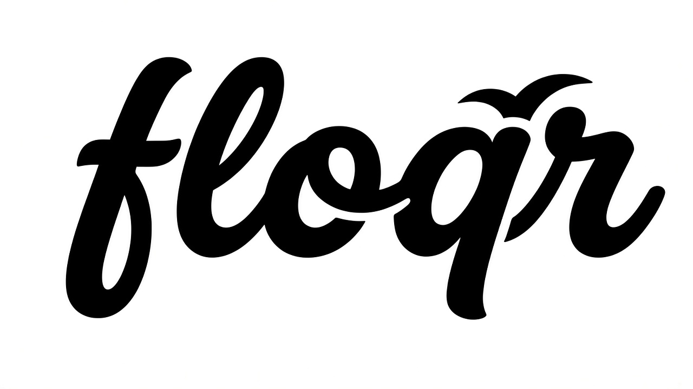
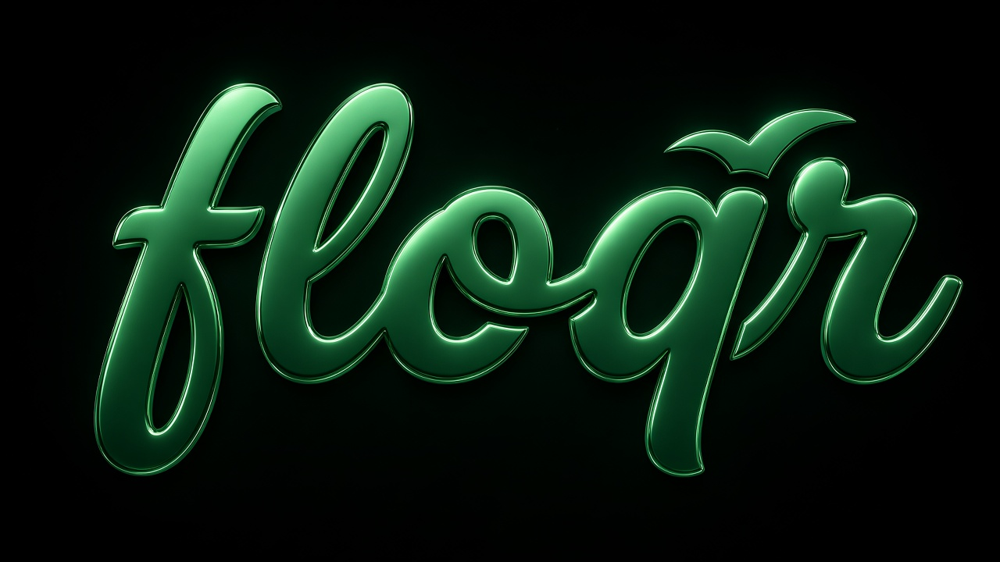
Pick a primary wordmark per chrome (table above). Next we can (1) vectorize your source to SVG,
(2) wire floqr-chrome-scheme.js to swap Search/login hero logos by chrome,
and (3) retire or keep the current tile-square floqr-color.png as a secondary mark.